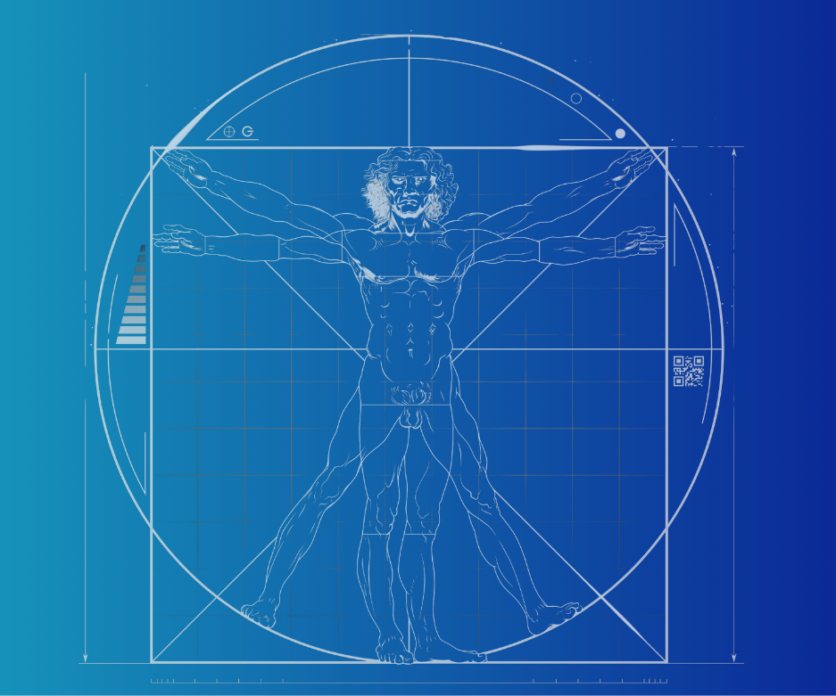

PROJECT_CASE_STUDY
02_ Projet client
Arc
Reflex
Refonte de la landing page d’Arc Reflex, avec création du logo, configuration DNS, déploiement du site, optimisation SEO et mise en place de la fiche Google Business Profile.

Role
Web design, identité visuelle, intégration, déploiement
Stack
HTML, CSS, SEO, DNS, Google Business Profile
Objectif
Créer une présence web claire, professionnelle et visible.
Statut
Site mis en ligne et optimisé.
Le problème
Arc Reflex avait besoin d’une landing page plus claire, plus professionnelle et mieux structurée pour présenter son activité, renforcer sa crédibilité et améliorer sa visibilité en ligne.
La solution
J’ai conçu une nouvelle landing page centrée sur la lisibilité, la confiance et la conversion. Le projet a inclus la refonte graphique, la création du logo, la configuration du nom de domaine, le déploiement, le référencement SEO et la mise en place de la fiche Google.
Interventions
01
Landing page
Refonte de la structure, hiérarchie visuelle et mise en page responsive.
02
Identité visuelle
Création du logo et harmonisation graphique de l’univers visuel.
03
Mise en ligne
Enregistrement DNS, configuration du domaine et déploiement du site.
04
SEO
Optimisation des titres, descriptions, structure HTML et référencement naturel.
05
Google Profile
Création ou optimisation de la fiche Google pour améliorer la visibilité locale.
Ce que ça montre
Ce projet montre ma capacité à accompagner un client sur l’ensemble de sa présence digitale : identité visuelle, web design, intégration, mise en ligne, référencement naturel et visibilité locale.